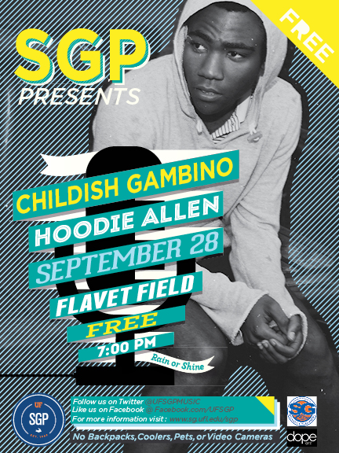
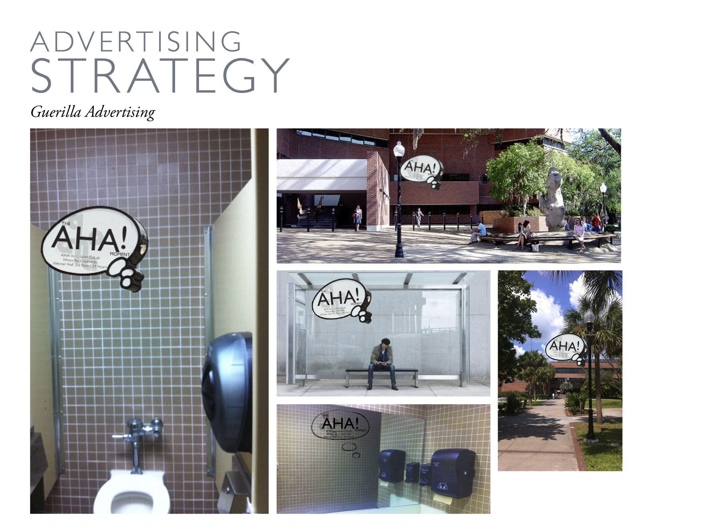
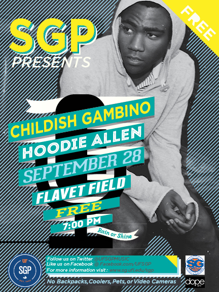
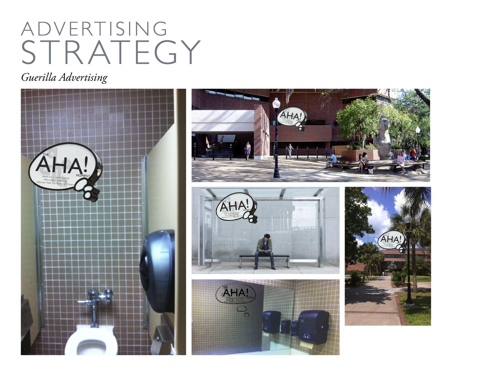

Jonathan Muench is a filmer, photographer, and graphic designer with an eye for art and a love for skateboarding. He tries to get involved and work with anything that sparks his interest. Born and raised in Miami, he later went on to attend the University of Florida where he is currently a senior advertising student with an outside concentration in art. After graduation, Jonathan plans to combine the elements and skill sets he has learned to land a career at one of many prominent ad agencies throughout the U.S.


 


